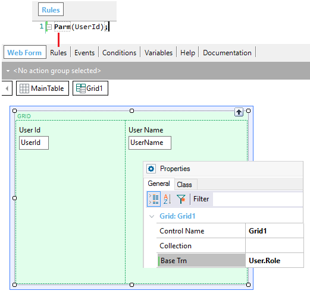

control. BaseTrn
<Trn> [ , <Trn> ]*
Where:
<Trn>
Is a Transaction name or Transaction.Level name.
Generators: .NET, .NET Framework, Android, Angular, Apple, Java
Controls: Grid
Although optional, allows you to declare its navigation intention and to improve time for specification (because it isn't needed to do the calculation of the grid Base Table).
It may be a list of Transaction levels. In that case, a kind of 'product' between the tables is done, solving queries that imply navigation over different tables that are difficult to express in another way, or that cannot be solved in a single SQL sentence.
This property applies only at design-time.
Having the following Transactions:
User //Transaction 1st. level name
{
UserId*
UserName
UserType
Role //Transaction 2nd. level name
{
RoleId*
}
}
Role //Transaction 1st. level name
{
RoleId*
RoleName
}
Look at the following image that shows a Web Panel (same concept for Panel) that receives a UserId value in its Parm rule and displays in a grid the roles associated with that user:

Note the Base Trn grid property set with User.Role in order to indicate the base table associated with that level.
This property is available since GeneXus X Evolution 3.
| Backlinks | ||
| Base Transaction clause | Load command | Load event |
| Orders and Filters in Grids for Native Mobile Applications |